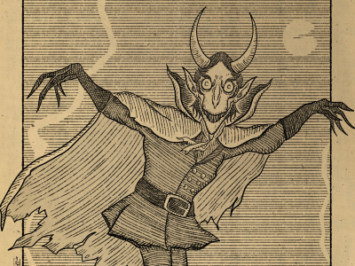

Folk Tales by the Fireside
Of all the things in this baffling world, humans are perhaps the most so.
Therefore, the crazy things our minds cook up should probably be expected,
but we still seem to surprise ourselves quite frequently. The things humans
think of can be beautiful, disturbing, and everything in between,
but all of it contributes to what we call culture.
Culture can come in the form of traditions, beliefs, behavior—even clothing.
Let’s take a look at some of the more bizarre products of culture.
Creatures of Folklore
Adaro
In the mythology of the Solomon Islands,
Adaro are both ghosts and elemental spirits,
with a sharp fin atop their head. They are said
to be created by the sun dancing on the waves,
and are associated with rainbows.
They can shoot deadly projectiles—sometimes
poison water, sometimes poison fish.
Close
Aigamuxa
Also known as bushmen. Its main diet is humans,
which it eats with its extremely elongated teeth.
They are said to target lone desert travelers at night.
The monster is said to have its eyes on its feet,
meaning that it cannot see as it hunts. In order to see,
it must stand on its hands or head, or lie in the sand.
Close
Blemmyae
Greek creatures that are missing a head and wear their faces
on their chest. Said to inhabit remote parts of the world.
They most likely came from a mistranslation of an insult,
from calling a group of people "brainless" to
calling them "headless".
Close
Hitostume-kozo
A Yōkai (supernatural apparition) of Japan
that takes on the appearance of a bald-headed child with one
eye in the center of its forehead, similar to a cyclops. They
generally do not cause any injury, are said to suddenly appear
and surprise people, and are a comparatively harmless type of yōkai.
Close
Kappa
Or river children. Typically described as human-like beings with
webbed hands and feet and turtle-like carapaces on their backs. A
depression on the head retains water, and if this is damaged or its
liquid is lost, a kappa becomes severely weakened. They are partial
to cucumbers and sumo-wrestling. Dangerous but not evil.
Close
Myrmecoleon
A hybrid between an ant and a lion. Most likely derived from an error in
the Septuagint version of the book of Job. An alternate, less interesting
interpretation of the Myrmecoleon is a lion of ants, or a very large ant.
But that's no fun, so we'll ignore it.
Close
Nuckelavee
A skinless, horse-like demon with a man's torso attached to its back
from Scottish folklore that brings death and disease. It's said to live in
the sea and emerge onto land to cause havoc. It stalks its prey for days,
appearing in the distance to cause fear and panic.
Close

Spring-heeled Jack
An entity in English folklore, His bizarre appearance and ability to
make extraordinary leaps made him quite popular. Jack was described
as having a frightful appearance, with clawed hands, and eyes of red
flames. He was tall and thin, with the appearance of a gentleman.
Several reports mention that he could breathe out blue and white flames.
Close